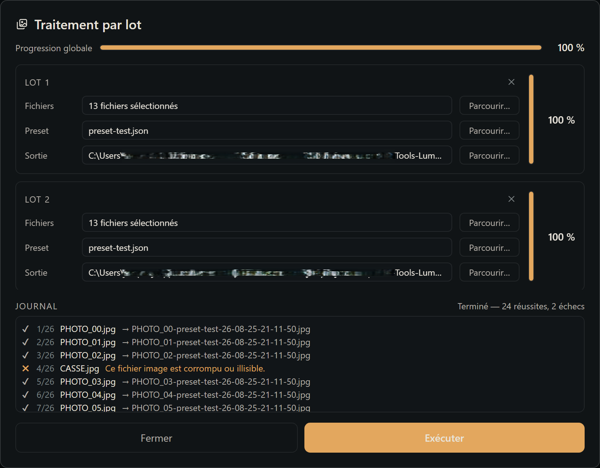

Batch processing
One recipe, a thousand photos. Batch processing applies an already-tuned preset to a whole list of images without opening any of them: you choose the files, the preset and the destination folder, click Run, and LumaFlow develops each photo one after another while you do something else.
The window opens from the header's ☰ menu, Batch entry.

1. Building a batch
A batch is a block with three pieces of information. Add as many as you need with + Add a batch, remove one with its block's cross.
| Field | What you choose |
|---|---|
| Files | A multi-file selection of images, in the usual Windows dialog — with the same filters as opening a photo: JPEG, PNG, and Canon (.cr2), Nikon (.nef) and Sony (.arw) RAW. |
| Preset | A .json recipe file, as produced by ☰ > Presets > Export. |
| Output | The folder to drop the developed images into. It's never created automatically: it must already exist. |
Several batches can perfectly well target different presets or folders — that's actually the whole point: process a black-and-white wedding and a Velvia reportage in a single gesture.
The Run button stays disabled while a batch is incomplete. Paths are re-checked at launch: a preset or output folder that has vanished since selection is flagged before a single image is decoded.
2. Output file names
Each developed image is written under a name built as:
<source file name>-<preset name>-<YY-MM-DD-HH-MM-SS>.<extension>For example, IMG_0431.CR2 processed with velvia-doux.json on August 25, 2026 at 14:32:07 becomes:
IMG_0431-velvia-doux-26-08-25-14-32-07.jpgThe timestamp starts with the year, so a folder sorted by name is also sorted in chronological order. More importantly, it makes every name unique: a batch never overwrites the result of an earlier one, and you're never asked about overwriting. Re-running the same batch after tweaking the preset simply drops a new series next to the old one.
The extension follows the source: a PNG stays a PNG, everything else — JPEG as well as RAW — comes out as JPEG, at the quality set in Preferences > General. A RAW obviously can't be re-written as RAW.
3. Tracking progress
Two progress scales, updated continuously:
- the horizontal gauge at the top of the window, with its percentage, gives the overall progress — across every image of every batch;
- the vertical gauge to the right of each block, with its percentage, gives the progress of that batch.
In both cases the percentage means "images processed / total images". Failures count as processed: a gauge does reach 100% even if some images couldn't be developed.
4. The log
At the bottom of the window, the log receives one line per image, in processing order: a sequence number, the source file name, then either the written file's name (on success) or the reason for the failure. Successes and failures are distinguished both by symbol (✔ / ✖) and by color, never by color alone.
Error messages are written in plain language — "This image file is corrupted or unreadable.", "File not found.", "Not enough disk space to write the result." — never as a raw technical trace.
The summary on the right constantly shows where processing stands, then its final tally: Finished — 24 successes, 2 failures.
The log stays available after processing ends, and survives closing and reopening the window.
5. A failing file stops nothing
This is the central rule: a problem on one image costs a log line, never the whole run. LumaFlow drops the faulty file and moves on to the next one immediately — whether it's a missing file, a corrupted one, an unsupported format, an unreadable RAW, or a write error.
If it's a batch's preset that's unreadable, or it references steps absent from the current workflow configuration, that entire batch fails — but the following batches still run normally.
6. Stopping mid-run
While running, Run becomes Stop and the batch fields are locked. Clicking Stop ends processing after the current image — never in the middle of writing a file. Images already produced are kept, the gauges and log stay displayed, and the summary shows where processing stopped.
7. Good to know
- Your originals are never modified, exactly as in interactive editing: the batch reads the source files and only writes to the output folder.
- Processing is independent of the photo open on the light table. You can keep working on an image while a batch is running, and even close the batch window: processing continues, and reopening it shows the current progress.
- Images are developed at full resolution, like a manual export — not at the reduced resolution of the thumbnails.
- Only one run at a time. While a batch is running, a new launch is refused rather than queued.
- Cropping and perspective correction are not applied: a recipe never carries the Geometry and Framing steps, which are specific to a given photo and would make no sense replicated as-is across hundreds of others.
- Batches are not saved to disk. They live for the duration of the session: closing the application forgets them.